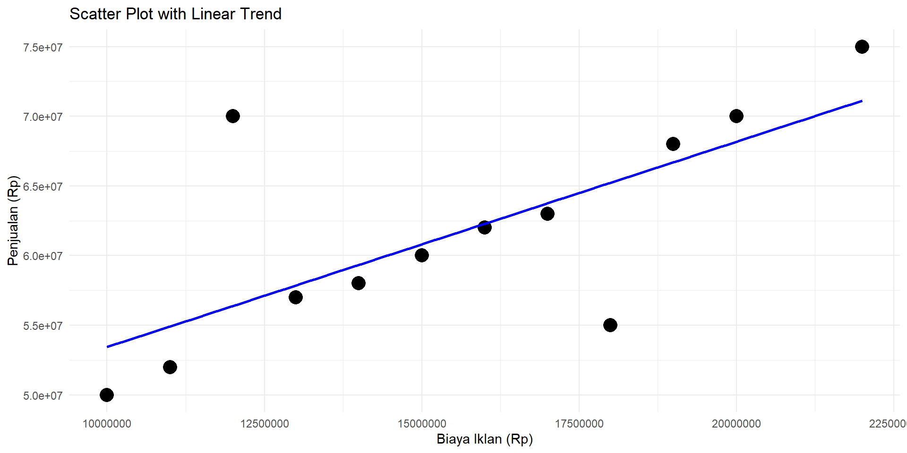

(Intercept) Biaya_Iklan
3.869822e+07 1.473911e+00 Mata Kuliah: Machine Learning
Regresi Linier dan Teknik Seleksi Peubah: Subset-Selection
Introduction
- Kita memiliki pasangan variabel input dan variabel output
- Cari sebuah fungsi yang merepresentasikan hubungan antara input dan output
- Kemudian, tujuan kita adalah meminimalkan kesalahan (error)
Input-Output Relationship

Data Case
Data Biaya Iklan Bulanan vs Penjualan Bulanan
| Bulan | Biaya Iklan (Rp) | Penjualan (Rp) |
|---|---|---|
| Januari | 10,000,000 | 50,000,000 |
| Februari | 12,000,000 | 70,000,000 |
| Maret | 15,000,000 | 60,000,000 |
| April | 11,000,000 | 52,000,000 |
| Mei | 14,000,000 | 58,000,000 |
| Juni | 13,000,000 | 57,000,000 |
| Juli | 16,000,000 | 62,000,000 |
| Agustus | 18,000,000 | 55,000,000 |
| September | 17,000,000 | 63,000,000 |
| Oktober | 19,000,000 | 68,000,000 |
| November | 20,000,000 | 70,000,000 |
| Desember | 22,000,000 | 75,000,000 |
- Input adalah biaya iklan bulanan
- Output adalah penjualan bulanan
- Hubungan antara biaya iklan dan penjualan adalah linier atau non-linier?
- Cari fungsi yang merepresentasikan hubungan tersebut
What is Function?
- Fungsi adalah hubungan matematis antara input dan output
- Fungsi linier: \(f(x) = ax + b\). Artinya, output adalah hasil perkalian input dengan koefisien \(a\) ditambah dengan konstanta \(b\). Ini adalah fungsi deterministik.
- Pada regresi linier, terdapat ketidakpastian yang biasanya ditulis sebagai \(\epsilon\) atau error term. Sehingga fungsinya menjadi: \(f(x) = ax + b + \epsilon\) atau \(y = ax + b + \epsilon\)
- Tujuan: Cari nilai \(a\) dan \(b\) yang paling baik untuk meminimalkan kesalahan \(\epsilon\).
Data Penjualan Bulanan Vs Biaya Iklan Bulanan
Scatter Plot with Linear Relationship
Finding the Best Fit
- Least Squares Method: Cari nilai \(a\) dan \(b\) yang meminimalkan kesalahan \(\epsilon\).
- Residuals: Selisih antara nilai prediksi dengan nilai observasi.
- Residual Sum of Squares (RSS): Jumlah kuadrat dari selisih antara nilai prediksi dengan nilai observasi.
- Objective: Minumumkan RSS.
\[ RSS = \sum_{i=1}^{n} (y_i - \hat{y}_i)^2 \] \[ \hat{y}_i = ax_i + b \] \[ \text{Find } a, b \text{ that minimize } RSS = \sum_{i=1}^{n} (y_i - ax_i - b)^2 \]
- Metode lain: Maximum Likelihood Estimation (MLE), Bayesian Estimation, dll.
Multiple Linear Regression
Multiple Linear Regression: Hubungan antara satu variabel output dengan dua atau lebih variabel input.
Fungsi: \(y = a_1x_1 + a_2x_2 + ... + a_nx_n + b + \epsilon\)
Atau bisa ditulis dalam bentuk matriks: \(y = X\beta + \epsilon\)
RSS menjadi: \[ RSS = \sum (y - \hat{y})^2 \] \[ \hat{y} = X\beta \] \[ \text{Minimize } RSS = \sum (y - X\beta)^2 \] \[ \text{Find } \beta \text{ that minimize } RSS \]
\[ \beta = (X^TX)^{-1}X^Ty \]
Additional Technique: Gradien Descent
- Gradient Descent: Teknik optimasi yang digunakan untuk mencari nilai minimum dari suatu fungsi dengan cara iteratif.
- Objective: Minimalkan fungsi kesalahan (error) dengan mengubah nilai parameter secara iteratif.

Additional Material
Model Selection
- Akurasi prediksi: Estimasi menggunakan kuadrat terkecil (LS) sering kali memiliki bias rendah namun dengan variabilitas yang tinggi. Akurasi prediksi dapat ditingkatkan dengan menerapkan metode penyeleksian model atau input dan teknik penyusutan (shrinking), yang membuat beberapa koefisien (β) menjadi nol.
Terdapat dua pendekatan utama dalam seleksi model:
Subset Selection
Pendekatan ini bertujuan untuk mengidentifikasi subset dari p prediktor yang dianggap memiliki hubungan dengan respons. Model kemudian dibuat menggunakan metode kuadrat terkecil pada himpunan variabel yang telah dikurangi.Shrinkage
Pendekatan ini menggunakan semua p prediktor dalam model. Namun, koefisien estimasi akan menyusut mendekati nol dibandingkan dengan estimasi kuadrat terkecil. Teknik penyusutan ini, yang juga dikenal sebagai regularisasi, berfungsi untuk mengurangi varians.
Subset vs Shrinkage
- Subset Selection
- Best-Subset Selection
- Forward-Stepwise Selection
- Backward-Stepwise Selection
- Best-Subset Selection
- Shrinkage Methods (Regularization)
- Ridge Regression
- Lasso (Least Absolute Shrinkage and Selection Operator)
- Ridge Regression
Best-Subset Selection
Algorithm
- Biarkan M₀ sebagai null model, yaitu model tanpa prediktor, yang hanya memprediksi rata-rata sampel untuk setiap observasi.
- Untuk k = 1, 2, …, p:
- Bangun semua model dengan tepat k prediktor.
- Bangun semua model dengan tepat k prediktor.
- Pilih model terbaik di antara model tersebut, yang disebut Mₖ, dengan kriteria memiliki RSS terkecil atau R² terbesar.
- Pilih model terbaik di antara model tersebut, yang disebut Mₖ, dengan kriteria memiliki RSS terkecil atau R² terbesar.
- Pilih satu model terbaik dari M₀ hingga Mₚ menggunakan kesalahan prediksi tervalidasi silang, AIC, BIC, atau Adjusted R².
Forward-Stepwise Selection
Algorithm
- Biarkan M₀ sebagai null model, yaitu model tanpa prediktor.
- Untuk k = 0, …, p - 1:
- Pertimbangkan semua model yang menambahkan satu prediktor ke model Mₖ.
- Pertimbangkan semua model yang menambahkan satu prediktor ke model Mₖ.
- Pilih model terbaik di antara model tersebut dan sebut sebagai Mₖ₊₁, dengan kriteria memiliki RSS terkecil atau R² terbesar.
- Pilih model terbaik di antara model tersebut dan sebut sebagai Mₖ₊₁, dengan kriteria memiliki RSS terkecil atau R² terbesar.
- Pilih satu model terbaik dari M₀ hingga Mₚ menggunakan AIC, BIC, atau Adjusted R².
Backward-Stepwise Selection
Algorithm
- Biarkan Mₚ sebagai full model, yaitu model dengan semua p prediktor.
- Untuk k = p, p - 1, …, 1:
- Pertimbangkan semua model yang menghapus satu prediktor dari model Mₖ.
- Pertimbangkan semua model yang menghapus satu prediktor dari model Mₖ.
- Pilih model terbaik di antara model tersebut dan sebut sebagai Mₖ₋₁, dengan kriteria memiliki RSS terkecil atau R² terbesar.
- Pilih model terbaik di antara model tersebut dan sebut sebagai Mₖ₋₁, dengan kriteria memiliki RSS terkecil atau R² terbesar.
- Pilih satu model terbaik dari M₀ hingga Mₚ menggunakan AIC, BIC, atau Adjusted R².
Ukuran Kebaikan Model
- AIC = \(\frac{1}{n\sigma^2} (RSS + 2d\sigma^2)\)
- BIC = \(\frac{1}{n} (RSS + \log(n)d\sigma^2)\)
- Adjusted R² = \(1 - \frac{RSS / (n - d - 1)}{TSS / (n - 1)}\)
Keterangan:
- AIC = Akaike Information Criterion
- BIC = Bayesian Information Criterion
- RSS = Residual Sum of Squares
- n = jumlah data
- d = jumlah variabel prediktor
- Jika tersedia data validasi, maka Cross-Validation dapat digunakan untuk memilih model terbaik.
Ukuran Kebaikan Model
Saat mengevaluasi dengan Cross-Validation, beberapa metrik evaluasi yang umum digunakan adalah: \[ MSE = \frac{1}{n} \sum_{i=1}^{n} (y_i - \hat{y}_i)^2 \]
\[ RMSE = \sqrt{\frac{1}{n} \sum_{i=1}^{n} (y_i - \hat{y}_i)^2} \]
\[ MAE = \frac{1}{n} \sum_{i=1}^{n} |y_i - \hat{y}_i| \]
Reference
- An introduction to statistical learning by Gareth James, Daniela Witten, Trevor Hastie, Robert Tibshirani
- Kusman Sadik, 2021, “Machine Learning: Teori dan Implementasi dengan R”, Penerbit Informatika
- Pacmann Academy